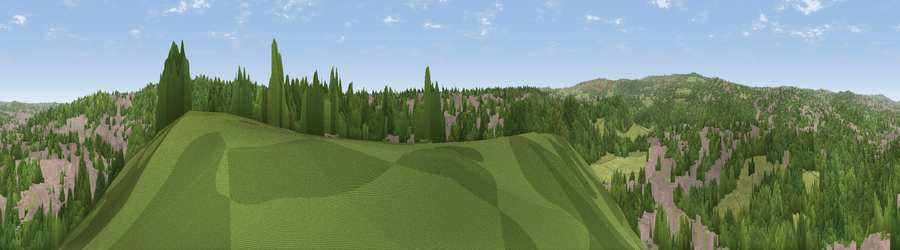

Viewpoint near Dronfield
#35813 in England · top 77% of its area beats it · near DronfieldWhere it is
The exact computed spot (SK 34275 82275). Click the marker for map links.
The view, rendered

A 360° render of this exact spot computed from the terrain model, tree cover and land cover — summer colours, afternoon light, calibrated against photographs of famous viewpoints. Real trees, hedges and buildings will differ in detail.
The panorama
Grey silhouette: terrain skyline in each direction (720 bearings, Earth curvature and refraction included). Dashed green: skyline with trees (+15 m) and buildings (+8 m) as obstacles. Blue strip: how far the ground is visible on each bearing.
Where the view opens
Wedge length = distance to the farthest visible ground on that bearing (vegetation-aware). Rings at 10, 25 and 50 km.
What fills the view
48% woodland · 38% built-up · 14% grassland
Angular shares of the visible panorama (visual magnitude), not map area. Landscape diversity 0.44 (0–1 Shannon).
Key numbers
More beautiful places nearby
The staircase of upgrades: each row has a higher view potential than everything closer. Driving times are estimates from straight-line distance, calibrated against real road routing — check an actual route before setting out.
| Place | Direction | Drive | Score |
|---|---|---|---|
| Viewpoint near Dronfield | ENE · 1 km | ~4 min | 41.1 |
| Viewpoint near Sheffield | NE · 4 km | ~8 min | 43.8 |
| Viewpoint near Ringinglow | WNW · 4 km | ~10 min | 66.4 |
| Viewpoint near Ridgeway | E · 6 km | ~12 min | 67.6 |
| Viewpoint near Holmesfield | WSW · 6 km | ~13 min | 69.4 |
| Viewpoint near Hathersage | W · 9 km | ~18 min | 70.9 |
| Viewpoint near Whitley | N · 14 km | ~25 min | 72.1 |
| Viewpoint near Wharncliffe Side | N · 14 km | ~26 min | 75.2 |
53.33628, -1.48674 · source: screening · position refined by local search. Computed location — check access rights before visiting.